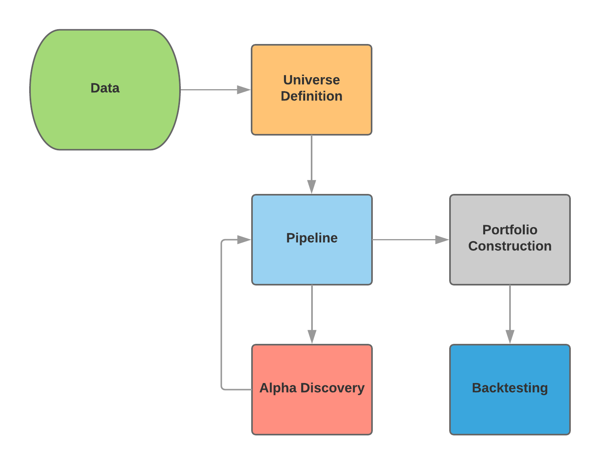
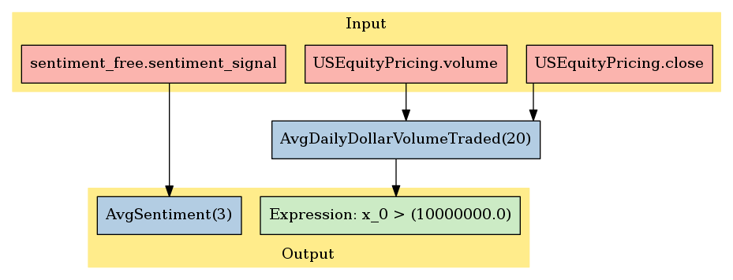
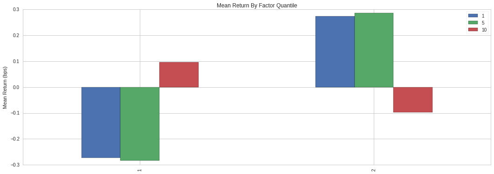
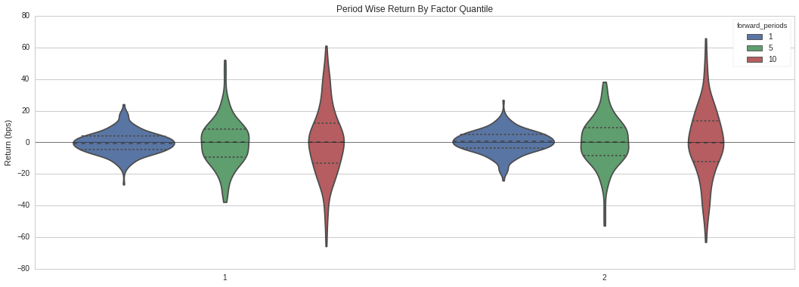
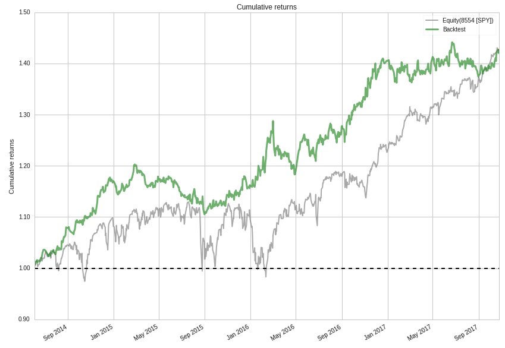

TL;DR - Tutorial covering the research workflow of a quantitative trading project.
December 30, 2017
Over this past semester, I developed a quantitative trading strategy that uses sentiment data from news sites and social media. These notes will cover my research workflow for strategy identification and backtesting. I chose to use the Quantopian platform because it gives access to rich datasets, an easy to use IDE, and a backtesting environment that lets you take code written in research notebooks and directly use it in your trading algorithms.
Strategy Identification and Backtesting Workflow
I used the Sentdex dataset, which "assesses the sentiment of companies by pulling from over 20 sources such as Wall Street Journal, CNBC, Forbes, Business Insider, and Yahoo Finance." The dataset's primary factor is sentiment signal, which is a standalone sentiment score from -3 to 6 for equities. I also used Quantopian's US Equity Pricing dataset which can be filtered to your strategy's specifications.
The strategies will perform differently depending on the chosen equity universe. I chose to use the Q1500US as my base, which consists of 1500 stocks that are suitable for trading. It throws out hard-to-trade equities like non-primary shares, stocks, with missing data, etc. Also, only the top 1500 stocks based on 200-day Average Dollar Volume (measure of liquidity) are kept.
To take the data from the Sentdex and US Equity Pricing datasets, I used Pipeline, Quantopian's way of dynamically selecting equities from the base universe to be used in the trading algorithm. It is optimal to use it in the research notebooks as well as in the actual trading algorithm. Just in case, an average daily dollar volume traded filter is applied to weed out low liquidity stocks in the Q1500US:
class AvgDailyDollarVolumeTraded(CustomFactor):
window_length = 20
inputs = [USEquityPricing.close, USEquityPricing.volume]
def compute(self, today, assets, out, close_price, volume):
out[:] = np.mean(close_price * volume, axis=0)
After the Pipeline is set up, the next step in the research workflow is alpha discovery. The goal in this stage is to evaluate alpha factors that can potentially be used in the trading algorithm.
"Alpha factors express a predictive relationship between some given set of information and future returns."
I chose 8 factors to test: bullish intensity and bearish intensity from the PsychSignal dataset, sentiment sigal, and a simple moving average of the sentiment signal over window lengths of 3, 10, 20, 30, 50, and 80, which were taken from the Sentdex dataset. A moving average is commonly used with financial data "to smooth out short-term fluctuations and highlight longer-term trends or cycles." My hypothesis is that after an event occurs that triggers some change in equity price, overall sentiment, in the form of news articles and social media posts lag behind shortly after. The optimal window length is unknown. I set them all up in the Pipeline and used Alphalens, a Python package used for performance analysis of alpha factors.
The simple moving average of sentiment signal over 3 days (average sentiment signal) had the best performance out of the 8 alpha factors tested. This is how the custom factor was created:
class AvgSentiment(CustomFactor):
def compute(self, today, assets, out, impact):
np.mean(impact, axis=0, out=out)
AvgSentiment takes the input sentiment_signal and averages it over a particular window length.
window_length =3
pipe = Pipeline()
dollar_volume = AvgDailyDollarVolumeTraded()
pipe.add(Sector(), 'Sector')
# Add our AvgSentiment factor to the pipeline using a 3 day moving average
pipe.add(AvgSentiment(inputs=[sentiment_free.sentiment_signal], window_length=window_length), "avg_sentiment")
# Screen out low liquidity securities.
pipe.set_screen((dollar_volume > 10**7))
start_timer = time()
results = run_pipeline(pipe, '2015-01-01', '2016-01-01')
end_timer = time()
# Times how long the pipeline takes to run.
print("Time to run pipeline %.2f secs" % (end_timer - start_timer))
adjusted_dataset = results.interpolate()
If you wanted to test different window lengths for your moving average, just replace the value of window_length. My pipeline extracts data from January 1, 2015 to January 1, 2016, but that can easily changed. Just note that financial models can become less reliable the longer the timeframe covered, so keep that in mind. Looking at results,
results.head()
you'll notice that many of the equities are listed multiple times and also that there are many NaN values. The first problem takes a little more work, but to deal with NaN values, Pandas has interpolate(), which constructs new data points within the range of the existing ones. Graphically, our Pipeline can be represented as the following:
Pipeline Representation
This is how I dealt with the first problem of repeated equities.
#Asset list extraction.
avgsent_factor = adjusted_dataset["avg_sentiment"]
sectors = adjusted_dataset['Sector']
asset_list = adjusted_dataset.index.levels[1].unique()
prices = get_pricing(asset_list, start_date='2015-01-01', end_date='2016-01-01', fields='price')
The asset_list contains all unique equities from the adjusted dataset. The avgsent_factor and sectors are their respective columns, and prices is a Pandas DataFrame of the prices for the equities in asset_list. Here is how you generate a tearsheet of relavent statistics for your alpha factor through the Alphalens package:
avgsent_factor_data = al.utils.get_clean_factor_and_forward_returns(
factor=avgsent_factor,
prices=prices,
groupby=sectors,
quantiles=2,
groupby_labels=MORNINGSTAR_SECTOR_CODES,
periods=(1, 5, 10))
avgsent_factor_data.head()
al.tears.create_full_tear_sheet(avgsent_factor_data)
Two graphs that are generated really stand out that give us some info about our average sentiment factor: Mean Return by Factor Quantile and Period Wise Return by Factor Quantile.
Mean Returns by Factor Quantile
The plot describes the optimal window length for which the alpha factor, average sentiment, is most predictive. It breaks down by 1, 5, and 10 days. The visualization shows that average sentiment operates best as a short-term predictor, and that 1 and 5 days are very similar, with a steep drop off by 10 days. Quantile 1 and 2 represent the short and long positions, respectively. When I get to the actual strategy itself, I will talk more about the short and long positions, but for now just know that the best factors have the largest absolute value possible. This graph confirms that a window length of 3 days works well to predict stock price because it fits nicely between 1 and 5 days on the plot and it has the largest absolute value for both the short and long quantiles.
Period Wise Return by Factor Quantile
The violin plot of our timeseries of quantile 1 and 2 (short and long positions, respectively) shows that a 1 day period had the highest density of returns and values relatively close to the mean.
I worked with a long-short equity strategy, which involves maintaining a long position on equities that are supposed to increase in price and maintaining a short position on equities that are supposed to decrease in price. The equities are ranked by the average sentiment factor that we created. If the average sentiment value associated with the corresponding equity was greater than 0, put it in the long basket and if it was less than 0, put it in the short basket. The strategy then orders all the equities in the long and short baskets one hour after the market opens each day, and is rebalanced every day. This strategy works best with a very high starting capital and is market neutral so it could theoretically perform well in any economic climate. The goal is to minimize exposure to the market.
After deciding on your alpha factor(s) and your trading strategy, it is time to convert it to the actual trading algorithm and backtest it. We can take our custom factors AverageSentiment and AverageDailyDollarVolumeTraded and use them directly in our algorithm, as well as our pipeline we created in the research notebook. But what we haven't covered yet are the necessary functions that Quantopian requires to place the market orders. In the Quantopian API, there are 3 functions that we need to use for our trading algorithm to work: before trading start, handle_data, and rebalance.
Before_trading_start is an optional method called once a day, before the market opens. Here, I deal with the NaN values, declare my long and short positions, and rank the equities based on the average sentiment factor. Every day, this function is called and the positions are updated. Handle_data is called every minute to get individual prices and windows of prices for one or more assets. You can also adjust your trading algorithm's leverage, number of portfolio positions, and the number of open orders. Rebalance is called every day 1 hour after the market opens and does the actual ordering of the equities. Here is the full trading algorithm:
from quantopian.algorithm import attach_pipeline, pipeline_output
from quantopian.pipeline import Pipeline
from quantopian.pipeline.data.builtin import USEquityPricing
from quantopian.pipeline.factors import CustomFactor
from quantopian.pipeline.data.sentdex import sentiment_free as sentdex
import pandas as pd
import numpy as np
class AverageSentiment(CustomFactor):
def compute(self, today, assets, out, impact):
np.mean(impact, axis=0, out=out)
class AverageDailyDollarVolumeTraded(CustomFactor):
window_length = 20
inputs = [USEquityPricing.close, USEquityPricing.volume]
def compute(self, today, assets, out, close_price, volume):
out[:] = np.mean(close_price * volume, axis=0)
def initialize(context):
window_length = 3
pipe = Pipeline()
pipe = attach_pipeline(pipe, name='Sentiment_Pipe')
dollar_volume = AverageDailyDollarVolumeTraded()
filter = (dollar_volume > 10**7)
pipe.add(AverageSentiment(inputs=[sentdex.sentiment_signal],
window_length=window_length), 'Average_Sentiment')
pipe.set_screen(filter)
context.longs = None
context.shorts = None
schedule_function(rebalance, date_rules.every_day(), time_rules.market_open(hours=1))
set_commission(commission.PerShare(cost=0, min_trade_cost=0))
set_slippage(slippage.FixedSlippage(spread=0))
def before_trading_start(context, data):
results = pipeline_output('Sentiment_Pipe').dropna()
longs = results[results['Average_Sentiment'] > 0]
shorts = results[results['Average_Sentiment'] < 0]
long_ranks = longs['Average_Sentiment'].rank().order()
short_ranks = shorts['Average_Sentiment'].rank().order()
num_stocks = min([25, len(long_ranks.index), len(short_ranks.index)])
context.longs = long_ranks.head(num_stocks)
context.shorts = short_ranks.tail(num_stocks)
update_universe(context.longs.index | context.shorts.index)
def handle_data(context, data):
#num_positions = [pos for pos in context.portfolio.positions
# if context.portfolio.positions[pos].amount != 0]
record(lever=context.account.leverage,
exposure=context.account.net_leverage,
num_pos=len(context.portfolio.positions),
oo=len(get_open_orders()))
def rebalance(context, data):
for secuhttps://www.quantopian.com/algorithmsrity in context.shorts.index:
if get_open_orders(security):
continue
if security in data:
order_target_percent(security, -1.0 / len(context.shorts))
for security in context.longs.index:
if get_open_orders(security):
continue
if security in data:
order_target_percent(security, 1.0 / len(context.longs))
for security in context.portfolio.positions:
if get_open_orders(security):
continue
if security in data:
if security not in (context.longs.index | context.shorts.index):
order_target_percent(security, 0)
In the Quantopian IDE, choose to do a full backtest over the start and end dates you want (I chose roughly a 3 year window from 6/3/2014 to 10/25/2017 because the Sentdex dataset only goes back so far), which took me roughly 45 minutes to complete. When you are done, head back to your research notebook to analyze the backtest. To create an Alphalens tearsheet of it, do this (where the string is your backtest code):
bt = get_backtest('5a1971b0a7a94b4499ca39ff')
bt.create_full_tear_sheet()
We first want to look at our trading algorithm's cummulative returns. The plot below shows the cummulative returns of the strategy versus the Standard and Poor's 500 from June 3, 2014 to October 25, 2017. The first 2 years, the strategy outperformed the benchmark and ended up matching the benchmark's performance by the end of the backtest.
Cummulative Returns of Trading Strategy vs. SPY
While cummulative returns are great, it doesn't tell the full story of how the algorithm performed. The plot below shows the rolling volatility (6 months) of the trading algorithm versus the SPY benchmark, as well as the average volatility of trading algorithm. The trading strategy has a lower volatility than the benchmark and greater returns up to the last few months of 2017.
"Volatility is a statistical measure of the disperion of returns for a given security or market index. Commonly, the higher the volatility, the riskier the security."
If your trading algorithm doesn't perform as expected, look first at the trading frequency as well as the initial portfolio allocation. Your algorithm might be designed to trade only once per day or even once per week, rather than multiple times per day. If your broker you plan on putting orders through has a trading fee larger than the net gains on each trade, inevitably you will lose your allocation. Also, another avenue to look into is how your strategy performs across different sectors. Some markets might be more sensitive to sentiment via news articles and social media, like cryptocurrencies.
That concludes the walkthrough! If you have any questions, feel free to send me an email.